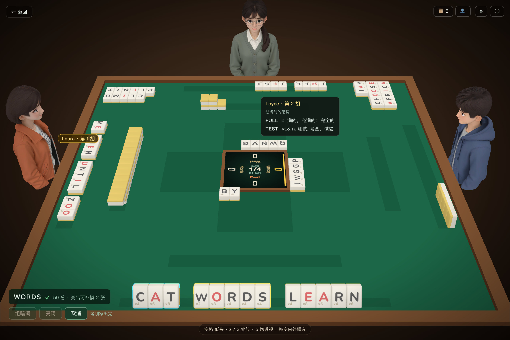
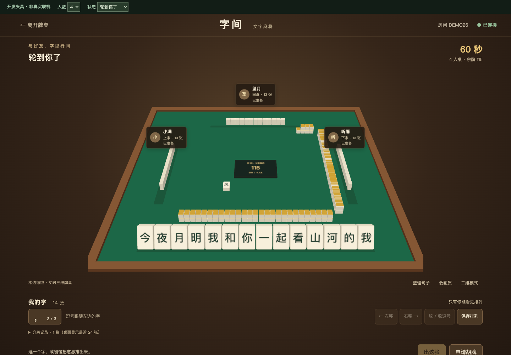
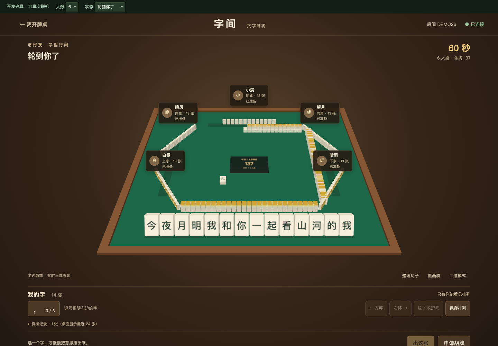
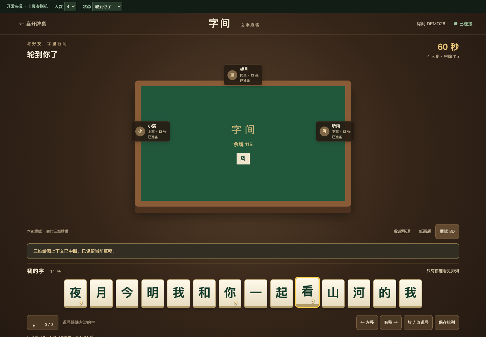
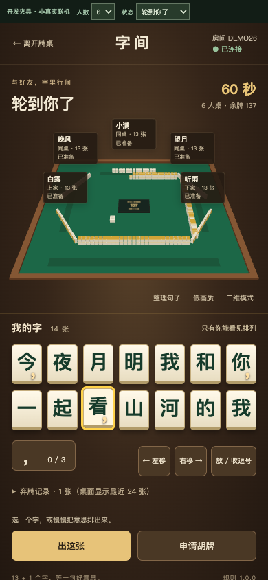
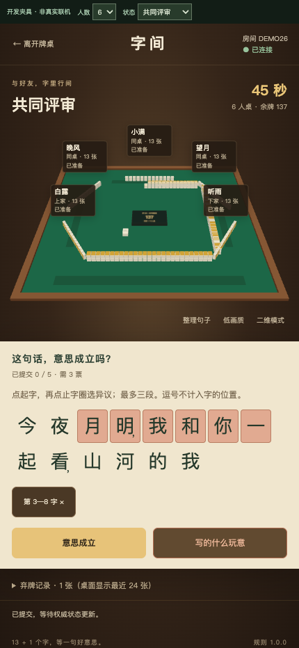

固定源 commit 6830301df3061cdd25350cf56807473e5505b311。左为原作者参考图，右为2026-10-23当前Mac Chrome实际WebGL；两图以同显示宽度对照，不作逐像素相似断言。原人物按许可边界替换为中性名牌，英文玩法展示换成本项目汉字/公共弃牌。






390×844的14字两行、三逗号覆盖；430×932冻结评审圈词。截图只证明本地UI，真实联网资格与计时由Sol接线验收。